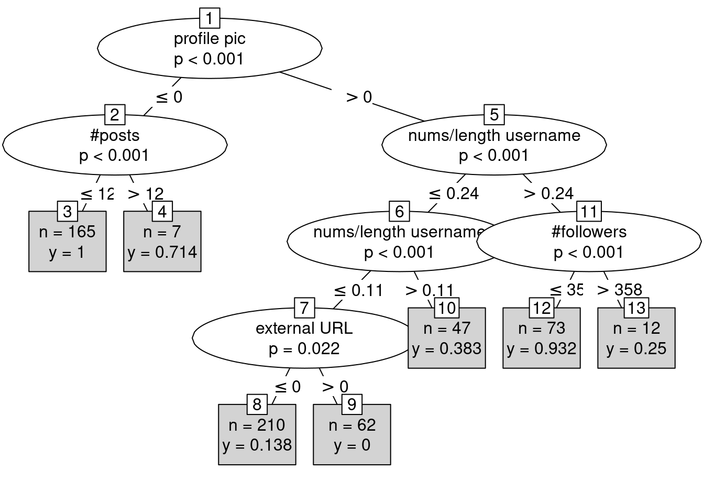

En el análisis de datos, es fundamental utilizar una variedad de técnicas para obtener una comprensión completa y detallada de los datos y sus patrones subyacentes. Hasta ahora, hemos realizado un análisis exploratorio de datos, visualización de datos, aplicado reglas de asociación, análisis de correspondencias (FCA), regresión y análisis de series temporales. Cada una de estas técnicas ha proporcionado perspectivas valiosas sobre diferentes aspectos del conjunto de datos.
Concretamente, en esta última parte que nos espera vamos a centrarnos en técnicas más alejadas de los contenidos de la asignatura, pero que igualmente nos permiten tener una visión más profunda y concreta de los patrones de nuestro conjunto de datos. Concretamente, dentro del Machine Learning existen muchas técnicas realmente útiles y que permiten a los desarrolladores encontrar modelos predictivos, sin necesidad de preocuparse por la propia implementación interna y la correlación de variables, ya que son los propios paquetes y sus funciones los que se encargan de ello.
Concretamente, vamos a probar party. Los árboles de decisión son una herramienta poderosa para la clasificación y la regresión. Su estructura intuitiva y gráfica permite descomponer el espacio de características en regiones disjuntas, facilitando la interpretación y visualización de las decisiones tomadas. Utilizaremos este paquete en R para construir y evaluar modelos de árboles de decisión. Este paquete implementa árboles de decisión condicionales que son capaces de manejar datos con estructuras complejas y relaciones no lineales de manera eficiente.
Por otro lado, optaremos por neuralnet, un paquete que nos permitirá construir y entrenar redes neuronales artificiales con una o más capas ocultas. Este enfoque es ideal para problemas donde las relaciones entre las variables predictoras y la variable objetivo no son evidentes o lineales.
Rows: 576 Columns: 12
── Column specification ────────────────────────────────────────────────────────
Delimiter: ","
dbl (12): profile pic, nums/length username, fullname words, nums/length ful...
ℹ Use `spec()` to retrieve the full column specification for this data.
ℹ Specify the column types or set `show_col_types = FALSE` to quiet this message.
test <-read_csv("datasets/test.csv")
Rows: 120 Columns: 12
── Column specification ────────────────────────────────────────────────────────
Delimiter: ","
dbl (12): profile pic, nums/length username, fullname words, nums/length ful...
ℹ Use `spec()` to retrieve the full column specification for this data.
ℹ Specify the column types or set `show_col_types = FALSE` to quiet this message.
Esta vez, no es necesario construir \(alldata\) como la union por filas de ambos datasets, ya que aprovechando que el autor del conjunto de datos de Kaggle realizó el split por nosotros, tomaremos el primero de los datasets a modo de entrenar el arbol de decision o red neuronal, y el segundo de ellos para probar como de bueno son ambos modelos con respecto a los “label” que disponemos.
library(party)
Loading required package: grid
Loading required package: mvtnorm
Loading required package: modeltools
Loading required package: stats4
Loading required package: strucchange
Loading required package: zoo
Attaching package: 'zoo'
The following objects are masked from 'package:base':
as.Date, as.Date.numeric
Loading required package: sandwich
library(neuralnet)library(caret)
Loading required package: ggplot2
Loading required package: lattice
tree <-ctree(fake ~ .,data = train)
Con ctree resulta realmente sencillo construir el árbol de decisión, ya que sus parámetros son simplemente las columnas que queremos evaluar o usar en el modelo, y el dataset al cual corresponden estas.
plot(tree, type ="simple")

plot(tree, type ="extended")
Se puede apreciar como ambos dibujos nos dan una visión completa del modelo del cual disponemos. Depende del parametro “type”, un carácter que especifica la complejidad del gráfico: extendido intenta visualizar la distribución de la variable de respuesta en cada nodo terminal, mientras que simple sólo proporciona información resumida.
Se puede apreciar claramente como según se van tomando ciertos valores de los atributos, el propio arbol de decision (como su propio nombre indica) va decidiendo que camino de nodos tomar hasta llegar a uno que no tiene hijos, caso en el cual el camino se ha terminado y el arbol ha tomado la decision de la clasificacion. Ahora bien, necesitamos conocer cómo de bueno es el árbol…
El árbol compone un modelo de clasificación realmente efectivo para nuestro conjunto de datos, obteniendose un 89% de aciertos para el dataset de “test”, lo cual es realmente bueno. Vamos a ver ahora que son capaces de hacer las redes neuronales con \(neuralnet\).
De primeras, apreciamos en el “plot” que disponemos de una red neuronal de 3 capas ocultas (hidden layers), así como lo hemos indicado en el parámetro \(hidden\). Si quisieramos probar como de buena es la red, podríamos realizar lo siguiente:
pred <- neuralnet::compute(NN, test)head(pred$net.result, n =15)
mae <-mean(abs(pred$net.result - test$numslength_username))mae
[1] 0.1531171
Un error cuadrático medio (MSE) de 0.03363798 es una métrica útil para evaluar el rendimiento de tu modelo. El MSE mide la cantidad promedio por la cual las predicciones de un modelo difieren de los valores reales al cuadrado. Cuanto menor sea el MSE, mejor será el rendimiento del modelo.
En nuestro caso, un MSE de 0.03363798 indica que, en promedio, las predicciones del modelo difieren de los valores reales por aproximadamente 0.03363798 unidades al cuadrado. Esto sugiere que el modelo parece estar haciendo buenas predicciones en el conjunto de prueba, lo cual es realmente positivo.
Podríamos probar a incluir como inferencia el atributo \(fake\) del conjunto de datos, que como ya hemos comentado a lo largo del “book” se trata del atributo “objetivo”.
train <-read_csv("datasets/train.csv")
Rows: 576 Columns: 12
── Column specification ────────────────────────────────────────────────────────
Delimiter: ","
dbl (12): profile pic, nums/length username, fullname words, nums/length ful...
ℹ Use `spec()` to retrieve the full column specification for this data.
ℹ Specify the column types or set `show_col_types = FALSE` to quiet this message.
test <-read_csv("datasets/test.csv")
Rows: 120 Columns: 12
── Column specification ────────────────────────────────────────────────────────
Delimiter: ","
dbl (12): profile pic, nums/length username, fullname words, nums/length ful...
ℹ Use `spec()` to retrieve the full column specification for this data.
ℹ Specify the column types or set `show_col_types = FALSE` to quiet this message.
Si lo que vamos a crear se trata de una red neuronal orientada a computo de problemas de clasificacio, en el constructor de \(neuralnet\) es necesario indicarlo a traves del atributo “act.fct”.
Estos son los pesos que ha aprendido la red, que son los parámetros clave que la red ajusta durante el proceso de entrenamiento para aprender a realizar predicciones. Estos pesos determinan la importancia de cada entrada en la activación de las neuronas y, en última instancia, en la salida de la red neuronal.
Confusion Matrix and Statistics
Reference
Prediction 0 1
0 56 12
1 4 48
Accuracy : 0.8667
95% CI : (0.7925, 0.9218)
No Information Rate : 0.5
P-Value [Acc > NIR] : < 2e-16
Kappa : 0.7333
Mcnemar's Test P-Value : 0.08012
Sensitivity : 0.9333
Specificity : 0.8000
Pos Pred Value : 0.8235
Neg Pred Value : 0.9231
Prevalence : 0.5000
Detection Rate : 0.4667
Detection Prevalence : 0.5667
Balanced Accuracy : 0.8667
'Positive' Class : 0
mse <-mean((pred$net.result - test$fake)^2)mse
[1] 0.1094549
De nuevo, hemos logrado un modelo realmente potente, que presenta una exactitud general (accuracy) del 88% y un intervalo de confianza del 95% para la exactitud varía entre 80.22% y 92.83%, indicando la certeza del rendimiento del modelo. El p-valor es realmente pequeño, lo cual tambien es interesante. Si quisieramos ahora conocer que dictaminaría nuestro modelo sobre un nuevo dato de entrada, podríamos hacer lo siguiente. Supongamos que queremos saber si una cuenta de Instagram con un 0.2 de “numslength_username”, un 0 de “numslength_fullname”, 1 de “profilepic” y 845 “followers”, ¿sería fake?
nuevo_dato <-data.frame(numslength_username =0.2, numslength_fullname =0, profilepic =1, followers =845)pred_nuevo_dato <-compute(NN, nuevo_dato)# Convertir la salida de la red neuronal en una predicción de clase (umbral de 0.5)prediccion <-ifelse(pred_nuevo_dato$net.result >0.5, 1, 0)pred_nuevo_dato$net.result
[,1]
[1,] 0.0518864
prediccion
[,1]
[1,] 0
Nuestra red neuronal dicta que la cuenta no va a ser falsa, además con un 91% de certeza (1 - pred$net.result).